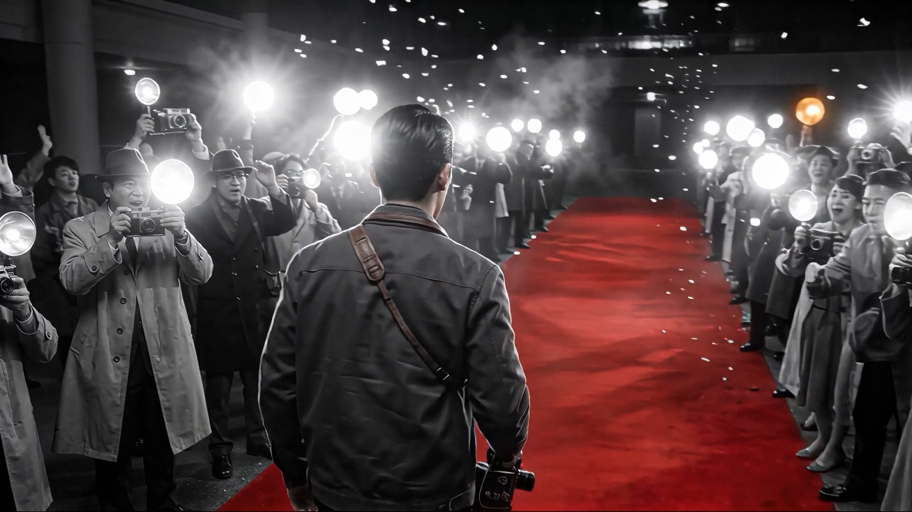
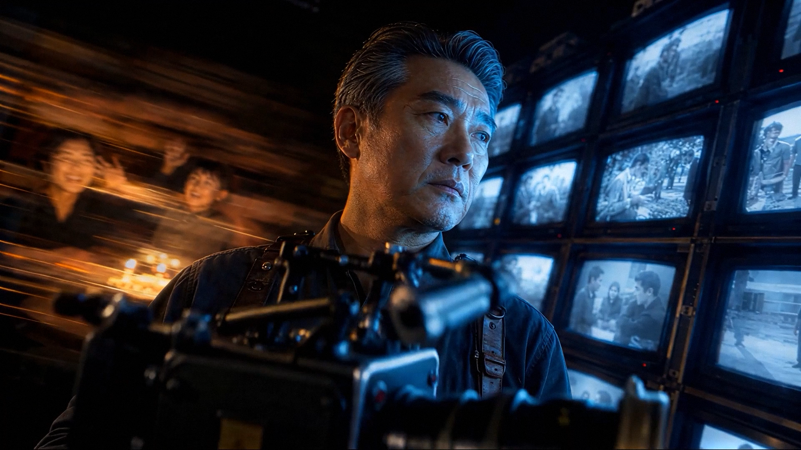
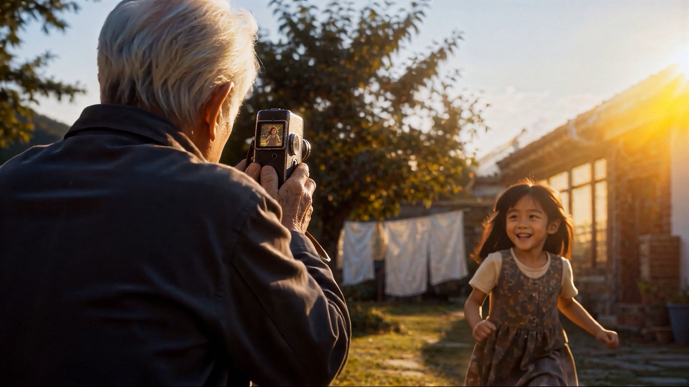

마지막 롱테이크
The Last Long Take
LOGLINE
평생 뷰파인더 너머로 타인의 삶만을 찍어온 촬영감독. 죽어가며 인생을 돌아보던 그는, 그렇게 지켜보기만 했던 시간마저 사랑이었음을 깨닫는다.
ABOUT THE FILM
촬영감독의 일생을 컷 없는 하나의 롱테이크로 담은 AI 단편영화. "본다는 것은 사랑한다는 것"이라는 주제를, 끊김 없는 시선의 이동으로 구현했다. 노인의 동공 속 흑백 느와르, 아기의 홍채 안으로 쏟아지는 필름 릴 — 한 사람의 시선이 다음 세대로 상속되는 순간들을 생성형 AI와 After Effects 합성으로 직조했다.
STILLS



CREDITS
- DIRECTED BYAHN JAEKWON
- GENERATIVE AI · COMPOSITINGAHN JAEKWON
- PIPELINENano Banana Pro · Seedance 2.0 · After Effects · Topaz · Premiere Pro
- MUSIC THEMEThe Legacy of Time